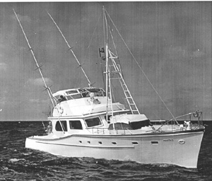

|  copyright - WHOI |
|
Eugenie VIII, a twin diesel cruiser, was a contribution
from the Continental Oil Co. WHOI used the vessel mainly for behavioral
studies of two species of jellyfish, Physalia and Vellela,
and for studies of migratory game fish. Eugenie VIII made a total
of 15 voyages for WHOI.